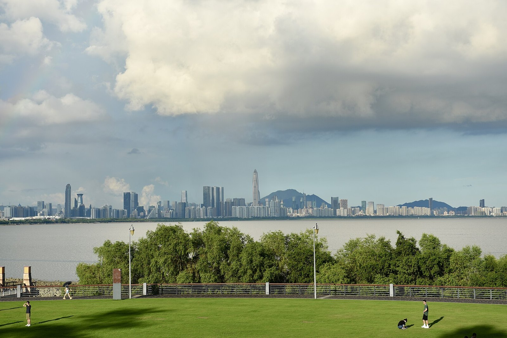

此刻的风景
去海边，把时间还给自己。
今天，想怎样度过？
选几项，就能出发01 / 给今天的提案
去这里，待一会儿
先看看这些不必着急的地方。
从粤海校区校门出发 · 交通为公共交通＋步行的单程估算 · 花费含往返交通及主要体验，额外消费见详情
02 / 随身目的地清单
总有一处，合你的心情
熟悉的风景，也有新的停留方式。
给条件留一点余地
试试更长的交通时间，或换一种想看的风景。
MADE FOR SZU DAYS
从学校出发，
走进生活里。
这是一本给深大学生的日常出走小册子。熟悉的公园、安静的湖边、别人的校园、一家超市，都可以让普通的一天变得松一点。
不用照单全走。每份指南只留下两三个值得待着的位置，吃饭和邻近去处由你自己决定。
怎么理解时间、费用和资料核验？
日常休闲以近校、小段空闲为主；半天需要留出往返和停留；全天多为更远的绿地与生活片区。单程交通从粤海校区校门到实际入口，含换乘、候车和末段步行，均为区间估算，出门前用地图看实时路线。
费用按每人往返公共交通＋必要门票／主要体验估算；逛吃项目计入一份简单餐饮，购物和额外正餐另计。筛选预算按区间上限，交通按上限，不用最低值制造“刚好够”的错觉。
资料核验于2026年10月17日。来源优先管理方，并参考中文公开报道。部分条目尚缺独立实访交叉记录，详情附资料边界。场地临时关闭、票额和门店营业仍以当日公告为准。日期活动到期后退出可参与推荐，待排期项目只作灵感收藏。